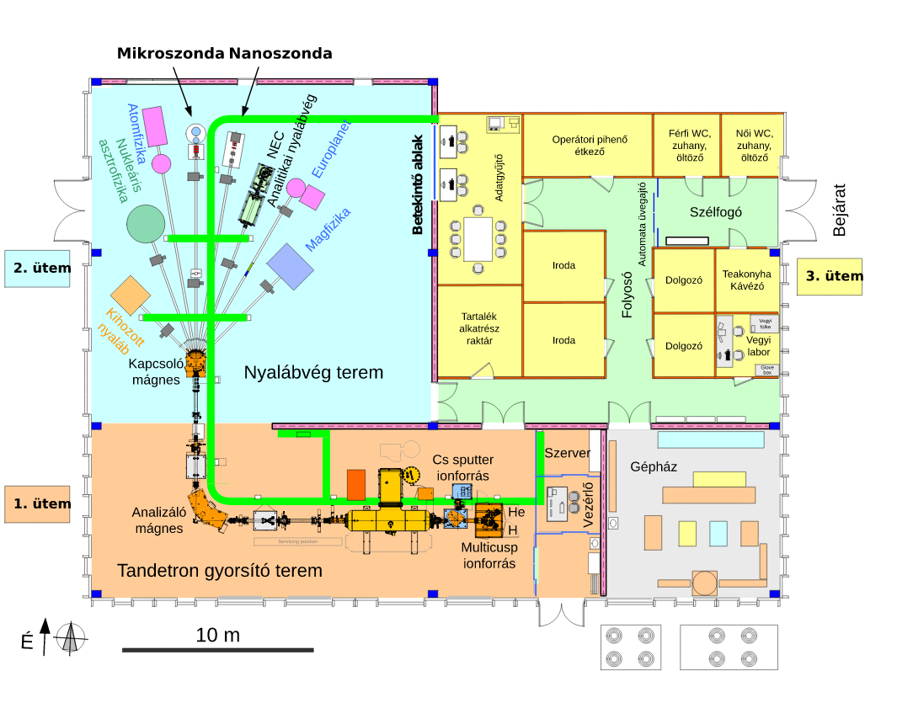

A tandetronüzemeltetési gyakorlatot az ATOMKI Tandetron Laboratóriumában végeztük el. Meismerkedtünk a Tandetron felépítésével és működési elvével, betekintést nyertünk milyen célokra használhatóak a külnböző nyalábvégek. A gyorsító energiahitelesítését kétféle reakcióval végeztük el. Vizsgáltük a terminálfeszültségét fluktuációját és a stabilitást is.
A gyorsítóhoz két ionforrás tartozik, az egyik H és He ionok előállítására, a másik nehéz ionokéra. A tandetron az első szakaszon felgyorsítja a negatív ionnyalábot, majd az argonnal töltött részen megtörténik az elektronok lefosztása. Ezt követően a terminálfeszültség tovább tudja gyorsítani a pozitív nyalábot. Megfelelő fókuszálással, apertúrák és mágnesek segítségével a céltárgyra irányítják a nyalábot. Az áramok ellenőrzését a Faraday-csészék teszik lehetővé. A teljes rendszerben megfelelő vákuumot tartanak fenn. A következő képen a gyorsító felépítése látható.
